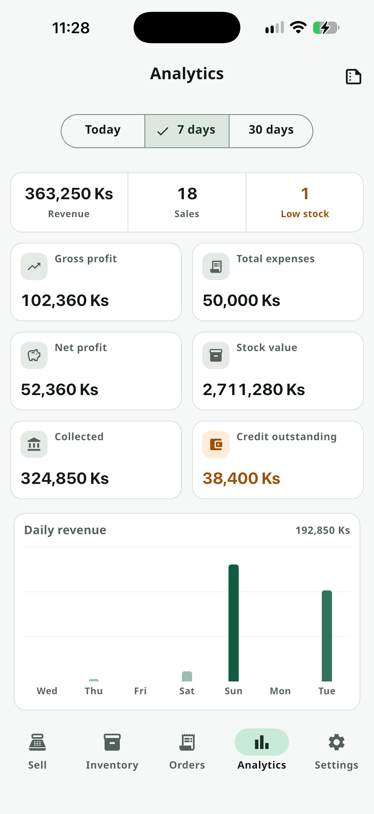
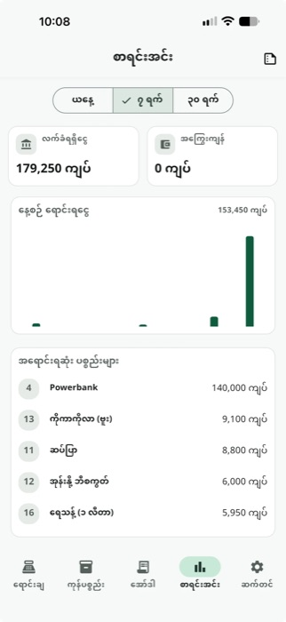
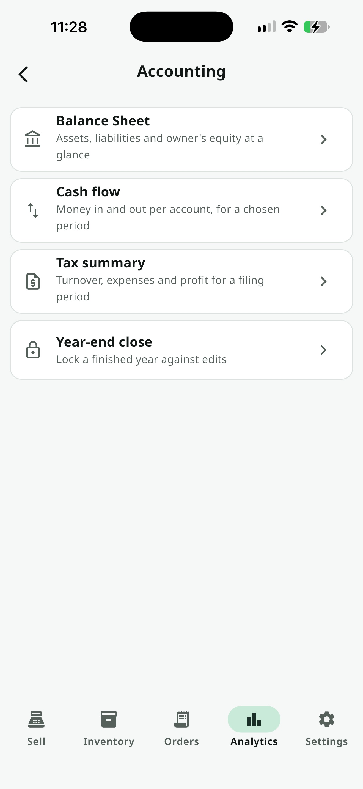

ဝန်ဆောင်မှုများ အားလုံး / Analytics & P&L
Analytics & P&L
Premiumဆိုင်ရှင် (Owner) သီးသန့် Dashboard — ဝင်ငွေ၊ အမြတ်၊ ကုန်ကျစရိတ်၊ လက်ကျန်တန်ဖိုး၊ အကြွေးကျန်ငွေ၊ အရောင်းရဆုံးကုန်ပစ္စည်းများကို Offline အခြေအနေမှာပင် တစ်ချက်ကြည့်ရုံနဲ့ သိနိုင်ပါတယ်။ Staff mode မှာ ဒီ Tab ကို လုံးဝ ဖျောက်ထားသည်။
Premium လိုအပ်ပါသည် — 2 လ Free Trial အတွင်း အခမဲ့ စမ်းသပ်နိုင်ပါသည်။ ဈေးနှုန်း ကြည့်ရန် →
အဆင့်ဆင့် အသုံးပြုနည်း

Range ရွေးပြီး KPI Grid ကြည့်ပါ
ဒီနေ့ / ၇ ရက် / ၃၀ ရက် ကာလကို ရွေးချယ်ပါ။ ဝင်ငွေ၊ အရောင်းအရေအတွက်၊ လက်ကျန်နည်းနေသော ပစ္စည်းအရေအတွက် ("glance strip") ကို ထိပ်ဆုံးမှာ ပြပေးသည်။ အောက်ခြေက KPI Grid မှာ — အမြတ်၊ ကုန်ကျစရိတ်၊ အသားတင်အမြတ် (ရှုံးနေရင် အနီရောင်ပြသည်)၊ လက်ကျန်တန်ဖိုး၊ လက်ခံရရှိငွေ၊ အကြွေးကျန်ငွေ — Card တစ်ခုစီကို နှိပ်ရင် သက်ဆိုင်ရာ Screen ကို တိုက်ရိုက် ခေါ်ပေးသည်။

Chart နှင့် အရောင်းရဆုံးစာရင်း ကြည့်ပါ
နေ့စဉ် ရောင်းရငွေကို Bar chart နဲ့ ပြပေးပြီး၊ Bar ကို နှိပ်ရင် ရက်စွဲ+ပမာဏ Tooltip ပြသည်။ အောက်မှာ အရောင်းရဆုံး ပစ္စည်းများ စာရင်းကို အရေအတွက်နှင့် ဝင်ငွေနှစ်ခုလုံး ပြသည် — ဘယ်ပစ္စည်း အရေးကြီးလဲဆိုတာ ချက်ချင်းမြင်ရအောင်ပါ။

စာရင်းကိုင် (Accounting) စာရင်းများ ဖွင့်ကြည့်ပါ
Chart အောက်ခြေမှာ ရှိတဲ့ စာရင်းကိုင် Card ကို နှိပ်ရင် Accountant တစ်ဦး တကယ်တောင်းလေ့ရှိတဲ့ စာရင်းလေးမျိုး — Balance Sheet, Cash Flow, Tax Summary, Year-end Close — ရှိတဲ့ Hub ကို ဖွင့်ပေးပါတယ် — အားလုံး Live ဖြစ်ပြီး Offline အလုပ်လုပ်ကာ P&L အတိုင်း Premium-gate ဖြစ်ပါတယ်။
Balance Sheet
ပိုင်ဆိုင်မှု − ကြွေးကျန် − ပိုင်ရှင်ရင်းနှီးငွေ ကို ပြသည်။ ကွာဟမှုရှိရင် ဖုံးကွယ်မထားဘဲ "မှတ်တမ်းမဝင်" ဟု ရိုးသားစွာ ပြသည်။
Cash Flow
ငွေပေးချေမှု အကောင့်တစ်ခုချင်းစီအတွက် အစလက်ကျန်၊ ငွေဝင်၊ ငွေထွက်၊ အဆုံးလက်ကျန် (Default: ဒီလ) — CSV Export ပါသည်။
Tax Summary
ရောင်းအား၊ COGS၊ Gross Profit၊ Category အလိုက် ကုန်ကျစရိတ်၊ Net Profit (Default: ဒီနှစ်)။ Tax ကို ကိုယ်တိုင် မတွက်ပါ — ဂဏန်းချက်ကိုပဲ ပေးပြီး Accountant က တွက်ချက်ရန် ဖြစ်သည်။
Year-end Close
နှစ်တစ်နှစ် ရွေးပြီး Dec 31 အထိ Expenses/Equity မှတ်တမ်းများကို ဒီ Device ပေါ်တွင် ပိတ်နိုင်သည်။ အချိန်မရွေး တစ်ချက်နှိပ်ရုံနဲ့ ပြန်ဖွင့်နိုင်သည်။
သိထားသင့်တဲ့ Tips
P&L စာရင်း — Analytics app bar ပေါ်က icon ကို နှိပ်ရင် ရက်စွဲကာလ ရွေးပြီး Revenue − COGS = Gross Profit၊ Gross Profit − Operating Expenses = Net Profit အထိ တွက်ချက်ပြသော အမြတ်-အရှုံးစာရင်း ရနိုင်သည် (PDF export/print လုပ်နိုင်သည်)။
Owner-only — Staff PIN ဖြင့် ဝင်ရင် Analytics Tab လုံးဝ မမြင်ရပါ — ငွေကြေးအချက်အလက် လုံခြုံမှုအတွက်ဖြစ်သည်။
အားလုံး Offline — Internet မလိုပဲ local ရှိပြီးသား Sale/Expense ဒေတာများကိုသာ တွက်ချက်ပြသည်။
All In One POS ကို ယနေ့ပင် စမ်းကြည့်ပါ
2 လ အခမဲ့ စမ်းသပ်ကာလ — Card မလို၊ Sign up မလို။
ဒေါင်းလုပ်ဆွဲမည်